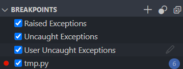

Validation is the process of ensuring that data is correct and useful.
Exception handling is the process of responding to errors that occur during program execution.
These often go hand-in-hand.
Exceptions are a concept in many programming languages.
When a runtime error occurs, an exception is thrown.
The exception is either caught by an exception handler or the program crashes.

Also called a try / catch block in some
languages.
try block to contain code that might cause an
exception
except block to handle the exceptionWe might use and except block to:
x = 1
y = 0
try:
# Code that might cause an exception
print(x / y)
except:
# What to do if an exception occurs
print("This is a description of the error...")
When an exception occurs, an exception object is created.
This object contains information about the exception.
try:
print(1 / 0)
except Exception as e:
print(e)
We can choose to handle specific types of exceptions. Useful when:
try:
## Will throw a ZeroDivisionError
print(1 / 0)
## Will throw a ValueError
print(int("abc"))
## Will throw a FileNotFoundError
file = open("does_not_exist.txt")
## Will throw a NameError - no handler so program will crash
print(variable_does_not_exist)
except ZeroDivisionError:
print("Cannot divide by zero.")
except ValueError:
print("Invalid value.")
except FileNotFoundError:
print("File not found.")
int(), float(), str(),
bool(), etc.
try:
number = int(input("Enter a number: "))
except ValueError:
## Handle invalid input
print("Invalid number.")
number = int(input("Enter a number between 1 and 10: "))
if number < 1 or number > 10:
## Handle invalid input
print("Invalid number.")
pet_type = input("Enter a pet type for sitting service (dog, cat): ")
if pet_type != "dog" and pet_type != "cat":
## Handle invalid input
print("Invalid pet type.")
mm/dd/yyyy, mm/dd/yy,
mm-dd-yyyy, mm-dd-yy, etc.
date = input("Enter a date in the format mm/dd/yyyy: ")
if len(date) != 10 or date[2] != "/" or date[5] != "/":
## Handle invalid input
print("Invalid date.")
else:
## Convert to a date object
date = datetime.strptime(date, "%m/%d/%Y")